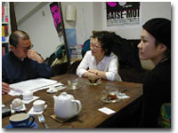

|
──北原さんの『オンナ泣き』には、まさに泣けてしまうような情けない男がいろいろと登場します。たとえばバタイユ抜きにはエロスを語れないインテリオヤジたち。ああいうレイプファンタジーというのは男なら誰でも持ってしまうものなのでしょうか。
キム フェミニズムの勉強会でレイプものを大量に見せられて「男の立場からどう思うか」って聞かれて困ったことがあるの。「レイプする男と私はお酒と酢です。もとは米だけどかなり違うものになってます」って答えましたけど（笑）。
槇村 でも、キムさん。北原さんに招待されてエロスファンデーション（※1）に行った時、キムさんがアンケートに「暴力とセックスは紙一重である」って書き込んでて私はびっくりしたことがあるんだけど（※2）、実際のところどうなの？
キム 色街で育ったので子どもの頃から暴力的なシーンばっかり見てたのね。それが嫌で嫌で、金と暴力がらみじゃない、まともな恋愛はどこかにないものかってずっと探してた。
槇村 つまり、自分がそう思うというのではなくて、そういう環境もあるといいたかったということね。
キム そう。今の情報社会の中では男の子のための性の情報ってエロビデオしかないでしょう。エロスファンデーションともつながる話だと思うけど、日本の男が子どもの頃からレイプもの主体のエロス・ファンタジーばかり観せられているのを考えると、さみしくもあるし恐ろしくもある。女の人ともっと違った楽しみ方や人間関係もできるのに、レイプ・パターンじゃなきゃ勃たないというのは一種の病気。そうでないものを中高生の頃から見てれば変わるのに、かわいそうだよ。
北原 でも、男の人って暴力的であればあるほどオッケーってところがあるじゃないですか。強さの絶対的な肯定はセックスにも反映されてて、女の人は力で征服するものって価値観は根強いんじゃないかな。ビデオが変わっただけでは変わらないのでは。
キム そうだね、「やる、やられる」の関係はなかなか変わらないかもしれない。
槇村 むしろ、女の子の方が変われると思う。それで次に男の子も変わっていくかもしれない。
──恋人からの暴力だけでなく、父親の暴力という問題もあります。北原さんも、そして槇村さんも『イマジン・ノート』の中でDVの体験をカムアウトなさってますが。
北原 石原慎太郎は「昔の男は女を殴らなかった」なんていうけど嘘です。ただ女が声をあげなかっただけ。うちの母もDVって言葉を知って声をあげることができたけど、昔は自分が殴られている状況を名付け他人と共有することができなかった。DVって言葉ができただけでも流れは変わってると思います。
槇村 くやしいけど、DVってなくならないと思う。でも、そういうことする男の人にはかかわるつもりはないです。なにいっても変わらないだろうし。
調子のいい編集者に「男の子相手に女の子とのコミュニケーションの取り方を描いてくださいよ」なんて調いわれたりすると「それもいいか」って思うけど、実際のところそんなことしても無駄でしょう。でも、女の人にはかかわっていきたい。だって若い女の子が好きだから、彼女たちだけに向けて描いていきたいのね。
それを読んで自分の体験していることがDVだとわかれば、少し早道ができるんじゃないかな。シェルターがどこにあってという情報だけでは駄目。結局、実際に自分の家の中でどう解決していくかということにならざるをえないと思うんだけど、そういう時に希望になるものが描ければいいけど。少なくともそういうものがあるのはいい時代になったと思いますね。

──一方で暴力的な欲求というのは女性の中にもあります。たとえば日本でも4月に公開されたフランス映画『ベーゼ・モア』などは右翼団体から上映禁止の圧力がかけられたりしているようですが。
北原 実際に上映禁止になっちゃったんですよね。「バカな奴は皆殺し」という邦題の原作もあるけど、女の子二人がどんどん人を殺してくって話なんです。20代の女性が原作・脚本で監督も助監督も全員女性。主演女優は本番もやってた元ポルノ女優。暴力映画っていっぱいあるのに、なぜ禁止されたかというと、多分女二人が人を殺していくことが偉い人をムカつかせたんでしょうね。面白かったのは、一人の女の子はポルノ映画を観るのが趣味。もう一人はレイプされて、お兄さんに「どこのどいつがやったんだ、俺が殺してきてやる」っていわれて「おめえがうぜえ」って殺してしまうの。
それって『ひとつ屋根の下』なんかより、ずっと共感できる。あれはあんちゃんが小梅ちゃんの気持ちも聞かないで犯人を見つけに行くでしょう。女の人の気持ちをまず聞かないで、女の性をめぐって男が戦うみたいなことになっている。
ほかにも「セックスしたいから男探しに行こうぜ」って男をつかまえて帰ってきたら、その男が「ちょっと待ってコンドームつけさせてくれ」といいだす。で、「うっとうしいんだよ、このコンドーム野郎」で殺しちゃうというシーンも印象的でしたね。
槇村 （笑）
北原 「知らねえ女にノコノコついてきて偉そうなこというんじゃねえ。コンドーム面がむかつくんだよ」って殺しちゃう。それがすごい気持ちよくて。
槇村 うん。
北原 みのもんたがストーカーされた女の子に「相手の男の車に乗ったアンタが悪い」なんて答えててすごく頭に来たことがあったけど、みのもんたも殺して欲しい。
槇村 ホントに。
北原 フランスの日常がどうなってるのかわからないけど、やっぱりフェミだろうがフェミじゃなかろうが女の人たちはムカついてるし、おかしいよって思うことがあるから、こういう映画が出てきたんだと思う。多くの男にとってはこういうのわかんないし、頭にくるでしょうね。フェミニストなんていってると自分が小さくまとまりそうで、もういうのやめようかとも思うの。映画観てから凶悪な気分になってるんです。
キム キラー・フェミニストってのはどう？
槇村 ヒール・フェミとかね。悪役を買って出る。
北原 フェミニズムに対する行き詰まり感ってある。理論的にはわかったけど、なにがいったいかわったの？ っていうところですごく鬱屈したものがあるんです。そんな状況で、こういう映画に出会って、すごく気持ちよかった。
槇村 初めてお会いした時も、「何だかくたびれた」って言ってた。
北原 『はちみつバイブレーション』を出した頃ですね。インターネットでもいろいろ始めた頃で、人権派や左翼系の人たちに期待されてしまって。「ブスっていうな」とか言論チェックが入ったり、右と左にパキッとわけて人を判断するとかいうのを目の当たりにしたんです。正しい、正しくないのチェックにばかり入ってしまって、嫌だってものに対する心が萎えている。そういうのにうんざりして、疲れてたんだと思う。正しいフェミニストのあり方なんてどうでもいいって。
──北原さんも槇村さんも、女性として生きていく中でいろんなことにぶつかって頭に来たり、考えたりしたことを、同性に向かってのエールのように書いてらっしゃいます。そのパワーに元気づけられるというか。
北原 私も『イマジン・ノート』を読んですごく勇気をもらいました。私、男の人にわかってもらおうって思ってないんです。「女の子と喋ろう」でいいやって。昔は男の人ときちんと向き合わなきゃって思ってたけど、それは私の問題ではなくて男の問題だから自分たちでやってくださいって思うようになったんです。女の人たちと気持ちのいい時間を過ごす方がどんなに自分の人生で大事か。その方が楽だしたのしく気持ちよく生きられる。
テレビやドラマでも女友達があんまり出てこないのはおかしいですよね。男の絆はものすごくたくさん描かれているのに。女の人は男の人とくっついて一人前みたいな価値観は全然崩れないのね。それがすごく不思議。
槇村 普段は女だけで仲良くやってて、そこにたまに男が「こんにちは」ってデートしに来るようなのが理想的よね。
キム この人の職場がまさにそう。運命共同体というか。一度、酔っている時に冗談でこの人を「あのオンナ」っていってしまったら「先生のことオンナって呼ぶのはやめて下さい！」って怒られました。
槇村 女ばかり同じメンバーで15年ぐらいやってますからね。竜宮城状態でみんな歳をとったことに気づかない。誰かが子どもでも産めばその子の成長で時計が回りだしたりするんだろうけど……。みんなずっと若い気でいる。
北原 私のところも三人のスタッフは全員女性です。そのうち一人は妹で、毎日子連れで出勤してますよ。うちは「女性向けのエロビデオを作らないか」とか結構いろいろなビジネスチックなオファーが来るんです。偉そうに「あなたはまだビジネスを知らない」とかいわれますけど、なんか違うと思って。
仕事を始めた頃はとにかくお金を稼ぎたいというのもあったけど、子どもが毎日来るようになってお金優先じゃないって気づきましたね。儲け第一では犠牲にするものが多すぎる。まず働きやすいということを最優先にしたいんです。インターネットを使えばお金もそうかからないし。今、e-コマースとか.comとかで成功した女たちの物語とかやってるけど、うらやましいなぁ（笑）っていうか、何億も集めるようなことをしたいわけじゃないし、いっぱいお金を集めたり使った方が偉いという価値から離れた方がいいと思う。少人数のSOHOならそんなにお金もかからないはずだし、価値ってどんどん変わっていくんじゃないかな。経済とかいろんなものもじゃんじゃん壊れてるし。
キム 大きくなりすぎると、どっかの中華料理チェーンみたいに味が落ちたりするからね。
北原 社長室なんか作った段階でもうヤバイと思う。槇村さんのオフィスはアシスタントさんも誰彼区別なく机が並んでるって読んで、やっぱりそうだよなって。
キム この人のところはみんなで大きなテーブル囲んでるの。普通、漫画家のところって先生の机はみんなと違うところにあったりするのに。
北原 立場がわからないと仕事できないって人いますよね。役職とかどっちが上か下かわからないと安心できない人って多い。とくに男ね。
キム 男の世界はね、そうなのよ〜。パッと入って来た瞬間の声の低さ、押し出し、肘をどう張るかとか、オスの部分が出ちゃうのね。学歴はどうかとか、自分より強いか弱いかのチェックばっかり。それが嫌なのね。男がなぜセックスするのか中高年のオバサンに……あっ女の人にいわせるとですね、
北原、槇村 （笑）
キム 「うちの旦那、家に帰って来ても課長するんです」って。ちゃんとセックスしないと勤務評定が下がってしまうからするという。定年離婚される男のパターンって決まってます。「男は仕事だ。愛してるから働いてるんだ」で、ずっと手もつないでない。そういう人は自分のペニスの力が萎えてくると女房のことを全く見もしなくなりますね。人間扱いしない。
もしも男友達だったら十年も二十年も話もしなければメシも一緒に食わないというのなら「俺のことバカにしてるのか」って喧嘩になるでしょう。そういう関係って異常なのに夫婦という関係があるから切れないと。もっとバツバツ切ればいいのに。女は一度嫁いだら簡単に別れてはいけないという幻想みたいなものがあるんでしょうね。95％は気に入らないのに5％のいいところを見て別れないという。どんな極悪人だって5％ぐらいはいいところありますよ。この十年間で熟年離婚が5倍にもなっているといいますが、それはセックスレスが原因ではなくて、こんな関係を余生まで続けるべきではないと気づいたんでしょうね。
私ね、花田憲子のことが気になってるんですよ。滅茶苦茶悪くいわれてるけど、あの人、23歳ぐらいまでに二人子どもを産んだ。親方は多分、7〜8年前からインポですよ。そうなったからといって、あの親方が「憲子かわいいね、チュー」なんてやってるとは思えない。ブスーっとしてるだけでしょう。女としての慎みがないとか伝統を汚したとかいう前にじゃあ親方はなにしてるんだって。それこそ伝統の上にあぐらをかいてるだけじゃないのか。憲子さんは45歳過ぎぐらいから指一本さわられてないかもしれない。
北原 かもがつくのね、一応。
キム それじゃかわいそうでしょう。
北原 あんなデブばっかりの中にいたら、スマートな医者とかに惹かれるのも当然かもしれない（笑）。
キム 田口ランディさんが面白いことをいってて「男に誠意はいらない」っていうの。飲んだくれで博打やってるようなヤツでも「愛してるよ」「今度どっか行こう」ってずっといっててくれれば許せると。それができない男は定年離婚。無口じゃだめ。親方はそれに近い。男はもっと嘘つきましょうってことでしょう。
槇村 嘘……？
北原 嘘なんですか？
キム いや、演技というか。
──熟年離婚がある一方で熟年結婚もある。キムさんと槇村さんのようないわゆる事実婚という形はまだまだ少数派ですが。
槇村 最初は「合併」といってたんです。親しい人に二人のことを知って欲しいじゃないですか。手紙を出すのに、どう書いたらいいかで、しょうがなくて「結婚」とした。時間ギリギリになっちゃって。その方がわかりやすいと。
キム 合併っていうとどっちかが吸収されますよね、だいたい。私の方が吸収されちゃいましてね（笑）。逆に、いろんな「結婚」があることをしめすことにもなると考えたんです。制度ではなくて二人の気持ちが大切な結婚もあると。
槇村 いわゆる普通の人を納得させられることはなにもしていないんです。籍も入れてないし式も挙げてない。指輪だけだよね。
キム 日本に戸籍制度と原発はいらないというのが私のモットーですからね。相手が元気で生きていてくれるなら邪魔しないことですよ。どんどん勝手に生きてもらってそのおこぼれをもらうことがつきあうということ。なのに戸籍ってどんどん吸収合併しようとしていくじゃないですか。お互いの都合のいいところだけでつきあえばいいのに、名前がどうとか礼儀がどうとか、いちいち面倒。つまり、そういうことがなければ人間関係ができないのかっていうことでしょう。
実際、こういう戸籍の話をすると本当に嫌われるんですよね。みのりさんのような同性にバイブを売る女が許されないように（笑）。女が下半身のことを語るのと似たようなことかもしれない。
学生ですら「戸籍を取ってこい」って課題を出すと「そんな大事なもの手をつけられません」っていうの。じつは、三文判さえあればいとも簡単に誰でもとれてしまうことにも驚くし。で、レポートにくっつけて提出するようにいうと嫌がられる。
槇村 悪用されると思ってるんじゃないの（笑）。
北原 マフィアに売られるとか（笑）。
キム 戸籍は絶対的ってこびりついてるのね。戸籍がないと結婚できないとか。人間＝戸籍なのね。
槇村 人間より戸籍の方が大事だったりして。
キム 他の国には戸籍なんかないっていうとびっくりしてるけどね。芸能人が「籍だけ入れました」なんてのもやめればいいんですよ。諸外国は制度婚と事実婚に法的な差がほとんどないというのに、日本はいろんな形で差があるからね。
槇村 結婚にはいろんな形があるし、相手をとりかえてもいいって男の人も気づけばもっと楽になるのに。
キム 野球でキャッチャーのことを女房役っていうでしょう。ピッチャーは3〜4回変わるじゃない。旦那だって本当はそういうもんですよ。
北原 私の友達はほとんど結婚してるんですが、結婚するって聞くとなぜか嫌な気持ちになるの。「結婚するの」としかいわなくてなぜそう決めたかはいわない。どうして結婚を選んだのってこちらの質問はシャットアウトされてしまう。結婚の重さが私にはわからないしその意味もわからないのに、結婚は幸せで重大なことっていう共通意識を押しつけられるのはちょっと。でも、正しいので反論できない（笑）。
キム 我々の場合も「おたくどうして表札変わらないの」とか近所のオバサンにいわれて。「一緒に住んでないから」っていうと、はぁとかいぶかしがられる。
北原 不思議ですよね。ビジネス・パートナーというのはわかる。目的が一緒だから。でも、人生のパートナーってなにっていうと、老後が不安とかそういうことらしいんだけど、逆に老後にこんなに不安を持たされる社会ってなんだろうって、怖い。
キム 私は全然、老後に不安ないよ。死ぬまで元気でいる努力は毎日してるからね。金がなくてもどこでも生きていけるし。この人は不安で貯金とかしてるらしいけど。なるべくシングルでおつきあいできるような人とつかずはなれずの関係でなければ危ないですよ。二人三脚なんて片方が倒れたら共倒れなんだから。結婚は制度じゃなくて約束。いつでも出ていけるぐらいの方がいい。出ていかれないように言葉遣いを気をつけようとかなるわけじゃない。相手が見られたくないものは見てないふりをするとか、そういうのが全部なくなってしまってズブズブの関係になるのは嫌ですよね。
槇村 中身はなにもないのに型だけの家族やってるって、怖い。
キム 我々は「パートナー」といわれてもしっくりこないの。なんだろう間男に近いかな。交際としかいいようがない。
槇村 本にも書きましたが、キムさんって、ギャーって喧嘩ができる人なんです。それが一番助かってるかな。それまではとりあってくれる人がいなかったから喧嘩にもならなかった。ただ関係が悪くなるだけで。
キム この人は喜怒哀楽のバランスがはっきりしてますからね。人間の最高の魅力ってそこだと思うんです。喜んだり泣いたりするけど、絶対に怒らないとか、耐えるとか、そういうバランスのとれない人は気持ち悪い。みのりさんも怒るっていうバランスを持ってる。でも、旦那や社会に怒ったことのない女っているんじゃないの。
北原 ああ、いますね。どうして怒らずにいられるんでしょうね。
キム 怒りをぶつけ合えるのは対等な関係だから。なにがあっても運命共同体なんて気持ち悪い。夫婦は赤穂浪士じゃないんだから。
北原 でもね、夫婦のように長いことつきあうとセックスが燃えなくなるという問題があるじゃないですか。若い頃……、
キム あんた一番若いじゃない。
北原 なんとなく薄まっていって、自然消滅していくということがよくあったんです。今、つきあっている人は何人かいますが、その中で一番長い山田君は、セックスはほとんどしなくて、しても燃えないの。なんとかごっことかプレイをしないともう駄目。それでもこの人と暖かい感情をどこかで交流できてるんです。私にとって「歌って踊れる関係」っていうのかな。高尚な目的もないし人生ずっと手をとりあってとも思ってないけど、一緒に歌って踊れるんです。クレヨンしんちゃん踊りとか（笑）。
槇村 それってとても大事。
キム 男友達みたいだな。
北原 小さい頃の妹との関係にとても似ていて、それは気持いい、大切にしたいものなんです。パートナーでも結婚相手でもないし、べつに回りの人に納得してもらわなくてもいい。だけど、他の恋人や友達との関係とはまた別で考えていきたいんです。
今はセックスが終わったあとの二人の関係がテーマ。それってはじめてのことばっかりで……。ともあれ、男と女が二人で助け合っておぎないあっていくというのが一番の価値とされている世の中では生きづらい人は当然出てくる。なのに新しい男女の関係っていまだに見えないし。
──既存の男女関係の中では、負わなくていい負い目を感じさせられている人は少なくないかもしれません。たとえば北原さんは中絶のことをご自身の体験もふまえてお書きになっていますね。
キム この人のオフィスでもワイドショウを見ながら向井亜紀が槍玉にあがってましたね。
北原 うわぁいいなぁ楽しそう。「優秀な遺伝子を残したかった」とか変なストーリーに自らはまってて気持ち悪い。どうして誰も「養子にすれば」っていわないのかな。血ってなにっていうか。
キム 旦那の方が体が丈夫なんだから「僕が産みます」とかね。
北原 向井亜紀の一件があってから「バイブ使ったら子宮ガンになりませんか」ってお客さんが異常に増えてるんです。そんなことありませんって。
キム うちのスタッフ3人が実際に使って大丈夫と証明済みだと宣伝するか（笑）。
槇村 私は子どもを産むというのは贅沢なオプションという気がしますね。自分の好きでやることなのに、いいの悪いのというのはピンときません。でも、産むのはいいことという尺度の女の人は結構多いのでびっくりします。
北原 いつも社会的なことをいってるわけじゃないのに子どもの話になるといきなり「少子化は問題だ」といい出す人とかいて、不思議。今『バイブガールズ』で妊娠特集をやってるんですが、10人ぐらいスタッフがいてその半数が私を含めて中絶を経験している。で、その時「変なストーリーにはまった」ってみんないうんです。産まないという選択をした自分をものすごく責めるとかね。どんなセックスをしても妊娠してしまう可能性はあるわけで、なのに全部、産むことは素晴らしくて産まないのが悲惨とか、女としての権利を破棄してしまったとか考えるのはおかしい。自分の人生を生きるためにひとつの命を犠牲にした……と罪悪感にさいなまれたりしすぎると思います。だいたい私は「あなたの子どもを産みたい」っていうのが全然わからないんですよね。
キム みのりさんの本の中で男尊女卑や家父長制がなければ燃えない人たちの話も面白かった。こういう人いるよね。
槇村 中絶してごめんなさい……ってはまってる人と同じでしょうね。一家のために産めなくて悪い自分とか。
北原 不倫している人もそうでしょうね。結婚制度があるから燃えているだけでしょう。
──中絶経験があるとその後の妊娠・出産に影響があるのも事実です。ところがそういったことも含めて、女性の体に関する情報はじつはあまり開示されていません。
北原 この前「子宮幻想」って女の人たちに裸の女性の写真に子宮の場所を書き込んでもらうというワークショップをやったんです。
槇村 面白そう。
北原 言葉だと男の人は「宇宙」「世界」を思い浮かべ、女の人は「痛い」とか感覚的なものを思い浮かべる。場所はだいたい間違ってたり、大きすぎたり。一人「私はホシュッコなのでこういうのは嫌いです」って書いてきたコがいて、一ヶ月ぐらいホシュッコってなんだろうってずっと考えてて、この前やっとわかったの「保守っ子」だって。
キム 松方弘樹と離婚した時、仁科明子が一番頭に来たのは「子宮をとったオマエはもう女じゃない」といわれたことだって。それじゃ子宮から全部人格とか波及してるってことになるよね。それは「勃たない男は男じゃない」と同じぐらい間違ってる。
北原 じつは子宮ってすごく小さいとか、あんまり知られていない。そこが中心でそこに本質があるなんて嘘。私は大腸検査をしたんですが、大腸のほうがよっぽど宇宙と思った。
キム それはどういう意味で？
北原 ピンクできれいで、こんなに長いものが、自分の体の中にあるということに感動しました。私はアナルに幻想のあるアナル派かもしれない（笑）。体のことを知るというのはとても重要なことなのにどこかで放棄されているでしょう。中絶した時も足りない情報がいっぱいあって、どの医者を選んでいいのかまずわからなかった。『たまごクラブ』とか載せてないし、どこにもない。何日かかるのかとか。
うちの店でもアナルのお客さんははいい人が多いんです。アナル関係のグッズを買っていく人は気持ちのいい人が多い。もうゲイだけじゃない。心が広いっていうか。
キム 裏表のない人なんじゃない？
北原 そうそう。越えられる許容が広いっていうか。アナルが好きだからいい人なのか、いい人だからアナルが好きなのかは謎だけど。
槇村 私もアナル派の作品を描いてみようかな（笑）。
キム アナル派の少女マンガ。さかもと未明になっちゃうな（笑）。
槇村 アナルの人もいれば、ホシュッコもいる。極端ですね。
北原 昔より情報はたくさんあるはずなのにそういうのには目をつぶっちゃうというのがホシュッコです。ホシュッコになるのを選ぶというのはそこにアイデンティティがあるわけでしょうけど、どんなものなのか全くわからない。カッコイイと思わせてるなにかがあるんでしょうけど……。
キム 自然医学の人ってものすごく腸を大切にするんですよ。血液は腸で作られ、血液が細胞を作り、新しい血液がないとガンになるわけですから。骨髄移植なんかあんまり意味がないといわれているくらいです。だから腸が汚れている人はガンになりやすい。それはあまり噛まなかったり、食べ物に気を使わない人です。
そういうふうに体を大事にしない人は子宮もあまりチェックしない。自然医学や東洋医学をやってる女性はまず体を冷やさない。それが子宮系統の一番の安らぐいい方法ということを知っているんですね。だからみのりさんが大腸を大事にしているのはいいですねえ。 それと、この前、池下育子さんの病院に仕事で行って来たんです。素敵な淡いピンクの病院でね、彼女、ドレス来てて……。
槇村 ドレス？ 仕事着でしょ？ 白衣じゃないの？
キム 白衣じゃないよ、スーツだったと思うな。で「みのりさんとこのバイブ売ってます」って。レディースクリニックの医院長さんが「大人なんだから恥ずかしくないですよ」ってローターやバイブを希望者に販売している。陳列こそしてなかったですけど、ラブピースクラブから仕入れて販売しているという時代なのよ。レディスクリニックが推薦するバイブというのは担任が推薦する参考書のようなものでしょう。5年前だったら考えられない。それは淫乱とか恥知らずではなく、自分の体を誰かにまかせきりにしないということ。それは当たり前ということがやっと認められてきた。そこから波及して日本中の産婦人科に波及しないかね。ラブピースクラブが宮内庁御用達の看板でも掲げれば一気に……。
北原 キムさんは右の人に狙われたことないですか？
キム 全然！ 男のクセにセックスを語るエロ学者なんか論外みたいです。ともあれ、女の体を自分でコントロールしてはいけないというのはまだまだあるから難しいかな。子宮は夫のもの、産むところは医者のもの。それと性的なものってなかなかつながらない。
槇村 自分の体がバラバラですよね。そういうことも含めて女性の置かれている状況をもっと変えていきたいな。だって、おかしいことってなかなか根絶やしにならないんだもん。
北原 そうですね、まだ道のりは長いなと思いますね。
※1……「ノン・バイオレンス・エロチカ」という暴力的ではない女性自身が楽しむセックスのイメージを広げることを目標に掲げるオーストラリアのグループ。彼女たちの活動によりセックス産業の合法化が推進された。代表フィオナ・バタンの講演はじめ、日本でも何回かラブピースクラブ主催のワークショップが開催されている。
※2……そんなこと書いた覚えはありません。（キム談）
北原みのり
1970年生まれ。オンナのセックスグッズストア「ラブピースクラブ」代表。96年ラブピースクラブを設立以来、海外の女性たちとのネットワークをもとに、セックス産業に積極的な提案を行っている。セクシャリティ・ジェンダーをテーマにしたホームページ（http://www.ummit.co.jp/love/）は、若い女性を中心に共感を呼んでいる。エロチカとフェミをテーマにしたインディーズマガジン「バイブガールズ」編集長。著書に『はちみつバイブレーション』（河出書房新社）、『フェミの嫌われ方』（新水社）ほか。
槇村さとる
1956年10月3日生まれ。漫画家。73年『別冊マーガレット』でデビュー以来、現在執筆中の『ヤングユー』『コーラス』誌まで約四半世紀、第一線でハイクオリティの作品を描き続けている。代表作にフィギュアスケート界を舞台に男女のパートナーシップを問うた『愛のアランフェス』など。自伝的エッセイ『イマジン・ノート』（集英社）ではDVの体験なども綴り反響を呼んだ。おかしいことには声をあげ、その結果生きにくくなったとしても、幸せになりたいという意思はつねにまっすぐ。そんなカッコイイ「女の生きる道」を教えてくれる。「槇村さとるの穴」http://www.hh.iij4u.or.jp/~fcs/開設中。
キム・ミョンガン
1950年生。現代性教育学者・性人類学者。和光大学講師。「週刊ビッグコミックスピリッツ」「ポパイ」などの連載で、若者を中心に圧倒的な支持を集める。主な著書に『恋愛の基礎』『恋愛の基礎II もっと楽しいセックス』『アダムとイブはなぜ快感を進化させたのか』『ヘンタイの哲学』『恋愛45！紳士・淑女の性愛学』など。
|